6. Data Visualization
Visualization with Matplotlib
Importing Matplotlib
plt 為常用介面
載入其他重要的library
Figure
figure (from plt.Figure) 包含軸、點、文字等內容的物件
plt 來自import matplotlib.pyplot as plt
Saving Figures
fig.savefig()存圖
- 檔案格式由副檔名指定
- PNG, JPG, PDF, TIFF, and more.
{'eps': 'Encapsulated Postscript',
'jpg': 'Joint Photographic Experts Group',
'jpeg': 'Joint Photographic Experts Group',
'pdf': 'Portable Document Format',
'pgf': 'PGF code for LaTeX',
'png': 'Portable Network Graphics',
'ps': 'Postscript',
'raw': 'Raw RGBA bitmap',
'rgba': 'Raw RGBA bitmap',
'svg': 'Scalable Vector Graphics',
'svgz': 'Scalable Vector Graphics',
'tif': 'Tagged Image File Format',
'tiff': 'Tagged Image File Format',
'webp': 'WebP Image Format'}Simple Line Plots
Plotting a Simple Function
使用 plt.plot(x,y), plt來自import matplotlib.pyplot as plt
Multiple Lines in One Plot
多次呼叫 plt.plot可直接疊圖
Customizing Line Color
在plt.plot() 中使用 color 參數指定顏色
plt.plot(x, np.sin(x - 0), color='blue') # by name
plt.plot(x, np.sin(x - 1), color='g') # short code (r, g, b, c, m, y, k)
plt.plot(x, np.sin(x - 2), color='0.75') # grayscale
plt.plot(x, np.sin(x - 3), color='#FFDD44') # hex code
plt.plot(x, np.sin(x - 4), color=(1.0,0.2,0.3)) # RGB tuple
plt.plot(x, np.sin(x - 5), color='chartreuse') # HTML color name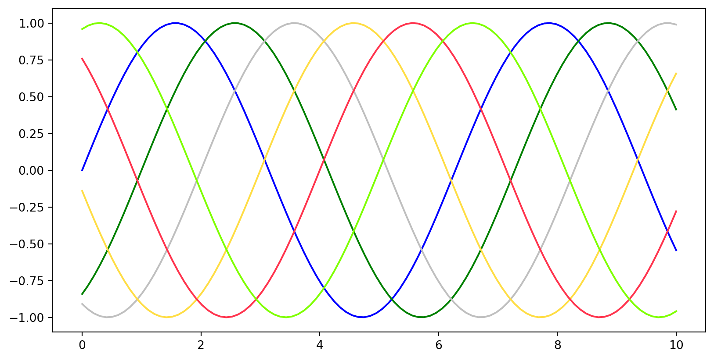
Customizing Line Style
在plt.plot()中使用linestyle 參數指定線段樣式
plt.plot(x, x + 0, linestyle='solid')
plt.plot(x, x + 1, linestyle='dashed')
plt.plot(x, x + 2, linestyle='dashdot')
plt.plot(x, x + 3, linestyle='dotted')
# Short codes:
plt.plot(x, x + 4, linestyle='-') # solid
plt.plot(x, x + 5, linestyle='--') # dashed
plt.plot(x, x + 6, linestyle='-.') # dashdot
plt.plot(x, x + 7, linestyle=':') # dotted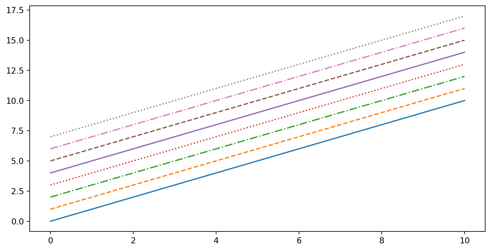
Customizing Line Color and Style
Adjusting Axes Limits
plt.axis([xmin, xmax, ymin, ymax])設定圖片範圍限制，limits要用list包起來[xmin, xmax, ymin, ymax]
Adding Titles, Labels, and Legends
plt.title(), plt.xlabel(), plt.ylabel()
Adding Titles, Labels, and Legends
要呈現圖標，先在 plt.plot() 時增加 label 參數，最後呼叫 plt.legend()
Hands-on - Line Plot
設定:
- Load library
- 中文問題….
Hands-on - Line Plot
Data: 空氣品質監測日平均值(一般污染物)
# https://data.moenv.gov.tw/dataset/detail/AQX_P_19
# https://drive.google.com/drive/folders/1OrMlB4hP8nnW_0bYwoHRO6DRXWNk1qvy?usp=sharing
!gdown '1P3qrYrynZhXDC13dVo5KhDXmld5OGZz1' --output 202310.csv
!gdown '1P1Kv1ZmPOYyi83DJKUIPoksM31vJJiS5' --output 202311.csv
!gdown '1P0mojOXgvVbXImnRTPQemm7dCkLDLKAC' --output 202312.csv
!gdown '1OwAf366l-iItXV4foJemw5QdMuD3JgMc' --output 202401.csvHands-on - Line Plot
Data
df202401 = pd.read_csv('202401.csv')
df202312 = pd.read_csv('202312.csv')
df202311 = pd.read_csv('202311.csv')
df202310 = pd.read_csv('202310.csv')
df_air = pd.concat([df202401,df202312,df202311,df202310],axis=0, ignore_index=True)
print(df_air.head()) "siteid" "sitename" "itemid" "itemname" "itemengname" "itemunit" \
0 80 關山 4 懸浮微粒 PM10 μg/m3
1 80 關山 5 氮氧化物 NOx ppb
2 80 關山 6 一氧化氮 NO ppb
3 80 關山 7 二氧化氮 NO2 ppb
4 80 關山 10 風速 WIND_SPEED m/sec
"monitordate" "concentration"
0 2024-01-01 33
1 2024-01-01 3.8
2 2024-01-01 0.5
3 2024-01-01 3.2
4 2024-01-01 2.2 Hands-on - Line Plot
Data Clean: Remove the quotes “” of column headers
new_headers = []
for header in df_air.columns: # data.columns is your list of headers
header = header.strip('"') # Remove the quotes off each header
new_headers.append(header) # Save the new strings without the quotes
df_air.columns = new_headers # Replace the old headers with the new list
print(df_air.head()) siteid sitename itemid itemname itemengname itemunit monitordate \
0 80 關山 4 懸浮微粒 PM10 μg/m3 2024-01-01
1 80 關山 5 氮氧化物 NOx ppb 2024-01-01
2 80 關山 6 一氧化氮 NO ppb 2024-01-01
3 80 關山 7 二氧化氮 NO2 ppb 2024-01-01
4 80 關山 10 風速 WIND_SPEED m/sec 2024-01-01
concentration
0 33
1 3.8
2 0.5
3 3.2
4 2.2 Hands-on - Line Plot
Data Clean: Data type
pd.to_numeric(List or Series, errors={‘ignore’, ‘raise’, ‘coerce’})
Hands-on - Line Plot
Data Clean: Data type
pd.to_datetime(List or Series, errors={‘ignore’, ‘raise’, ‘coerce’},format=)
Hands-on - Line Plot
請試著呈現林口測站在2024/1/1~2024/1/15的PM2.5濃度，要呈現figure legend，也要呈現x y 軸的名字
Hint:
- Subset, Boolean masking
df.sort_values(by=column)(dfcan be any DataFrame)
siteid sitename itemid itemname itemengname itemunit monitordate \
978 9 林口 33 細懸浮微粒 PM2.5 μg/m3 2024-01-01
1262 9 林口 33 細懸浮微粒 PM2.5 μg/m3 2024-01-02
3105 9 林口 33 細懸浮微粒 PM2.5 μg/m3 2024-01-03
3337 9 林口 33 細懸浮微粒 PM2.5 μg/m3 2024-01-04
4521 9 林口 33 細懸浮微粒 PM2.5 μg/m3 2024-01-05
5502 9 林口 33 細懸浮微粒 PM2.5 μg/m3 2024-01-06
7452 9 林口 33 細懸浮微粒 PM2.5 μg/m3 2024-01-07
7901 9 林口 33 細懸浮微粒 PM2.5 μg/m3 2024-01-08
8853 9 林口 33 細懸浮微粒 PM2.5 μg/m3 2024-01-09
9946 9 林口 33 細懸浮微粒 PM2.5 μg/m3 2024-01-10
11105 9 林口 33 細懸浮微粒 PM2.5 μg/m3 2024-01-11
12241 9 林口 33 細懸浮微粒 PM2.5 μg/m3 2024-01-12
13228 9 林口 33 細懸浮微粒 PM2.5 μg/m3 2024-01-13
15186 9 林口 33 細懸浮微粒 PM2.5 μg/m3 2024-01-14
15416 9 林口 33 細懸浮微粒 PM2.5 μg/m3 2024-01-15
concentration DateTime
978 24.0 2024-01-01
1262 13.0 2024-01-02
3105 15.1 2024-01-03
3337 15.9 2024-01-04
4521 23.5 2024-01-05
5502 20.6 2024-01-06
7452 20.2 2024-01-07
7901 12.6 2024-01-08
8853 5.8 2024-01-09
9946 27.3 2024-01-10
11105 19.7 2024-01-11
12241 10.1 2024-01-12
13228 4.5 2024-01-13
15186 6.3 2024-01-14
15416 19.2 2024-01-15 Hands-on - Line Plot
請試著呈現林口測站在2024/1/1~2024/1/15的PM2.5濃度，要呈現figure legend，也要呈現x y 軸的名字
Ref:
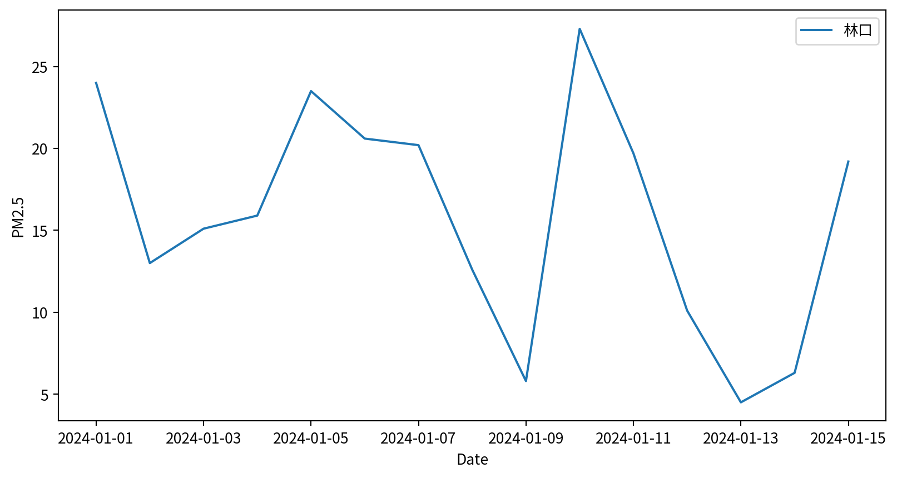
Line Plot - Seaborn
sns.lineplot(x,y), x y 為資料點

Line Plot - Seaborn
sns.lineplot(data, x, y), x y 表示 column names
Simple Scatter Plots
What is a Scatter Plot?
- 散佈圖scatter plot會將每一筆資料以點、圓圈或其他形狀單獨顯示，而不是用線條連接
- 適合用來觀察兩個或多個變數之間的關係
Scatter Plots with plt.plot()
plt.plot(x,y,marker,color), marker 設定點的樣式, color 設定顏色
Scatter Plots - marker shape
'o', '.', ',', 'x', '+', 'v', '^', '', 's', 'd' …
Line styles and marker shape
結合標記與線條樣式，以製作更複雜的圖表
Line styles and marker shape
使用額外的參數來自訂標記和線條
Scatter Plots with plt.scatter
plt.scatter(x, y) 可針對對每個點的size, color及其他屬性進行個別控制。
Varying color and size - Bubble chart
Data:
Parameters:
c: color for each pointssizealphatransparencycmapcolormap (more details later)
with varying color and size - Bubble chart
Visualizing Multidimensional Data
Iris dataset, visualizing four features at once.
Data:
# !pip3 install scikit-learn
from sklearn.datasets import load_iris
iris = load_iris()
features = iris.data.T
print(features)[[5.1 4.9 4.7 4.6 5. 5.4 4.6 5. 4.4 4.9 5.4 4.8 4.8 4.3 5.8 5.7 5.4 5.1
5.7 5.1 5.4 5.1 4.6 5.1 4.8 5. 5. 5.2 5.2 4.7 4.8 5.4 5.2 5.5 4.9 5.
5.5 4.9 4.4 5.1 5. 4.5 4.4 5. 5.1 4.8 5.1 4.6 5.3 5. 7. 6.4 6.9 5.5
6.5 5.7 6.3 4.9 6.6 5.2 5. 5.9 6. 6.1 5.6 6.7 5.6 5.8 6.2 5.6 5.9 6.1
6.3 6.1 6.4 6.6 6.8 6.7 6. 5.7 5.5 5.5 5.8 6. 5.4 6. 6.7 6.3 5.6 5.5
5.5 6.1 5.8 5. 5.6 5.7 5.7 6.2 5.1 5.7 6.3 5.8 7.1 6.3 6.5 7.6 4.9 7.3
6.7 7.2 6.5 6.4 6.8 5.7 5.8 6.4 6.5 7.7 7.7 6. 6.9 5.6 7.7 6.3 6.7 7.2
6.2 6.1 6.4 7.2 7.4 7.9 6.4 6.3 6.1 7.7 6.3 6.4 6. 6.9 6.7 6.9 5.8 6.8
6.7 6.7 6.3 6.5 6.2 5.9]
[3.5 3. 3.2 3.1 3.6 3.9 3.4 3.4 2.9 3.1 3.7 3.4 3. 3. 4. 4.4 3.9 3.5
3.8 3.8 3.4 3.7 3.6 3.3 3.4 3. 3.4 3.5 3.4 3.2 3.1 3.4 4.1 4.2 3.1 3.2
3.5 3.6 3. 3.4 3.5 2.3 3.2 3.5 3.8 3. 3.8 3.2 3.7 3.3 3.2 3.2 3.1 2.3
2.8 2.8 3.3 2.4 2.9 2.7 2. 3. 2.2 2.9 2.9 3.1 3. 2.7 2.2 2.5 3.2 2.8
2.5 2.8 2.9 3. 2.8 3. 2.9 2.6 2.4 2.4 2.7 2.7 3. 3.4 3.1 2.3 3. 2.5
2.6 3. 2.6 2.3 2.7 3. 2.9 2.9 2.5 2.8 3.3 2.7 3. 2.9 3. 3. 2.5 2.9
2.5 3.6 3.2 2.7 3. 2.5 2.8 3.2 3. 3.8 2.6 2.2 3.2 2.8 2.8 2.7 3.3 3.2
2.8 3. 2.8 3. 2.8 3.8 2.8 2.8 2.6 3. 3.4 3.1 3. 3.1 3.1 3.1 2.7 3.2
3.3 3. 2.5 3. 3.4 3. ]
[1.4 1.4 1.3 1.5 1.4 1.7 1.4 1.5 1.4 1.5 1.5 1.6 1.4 1.1 1.2 1.5 1.3 1.4
1.7 1.5 1.7 1.5 1. 1.7 1.9 1.6 1.6 1.5 1.4 1.6 1.6 1.5 1.5 1.4 1.5 1.2
1.3 1.4 1.3 1.5 1.3 1.3 1.3 1.6 1.9 1.4 1.6 1.4 1.5 1.4 4.7 4.5 4.9 4.
4.6 4.5 4.7 3.3 4.6 3.9 3.5 4.2 4. 4.7 3.6 4.4 4.5 4.1 4.5 3.9 4.8 4.
4.9 4.7 4.3 4.4 4.8 5. 4.5 3.5 3.8 3.7 3.9 5.1 4.5 4.5 4.7 4.4 4.1 4.
4.4 4.6 4. 3.3 4.2 4.2 4.2 4.3 3. 4.1 6. 5.1 5.9 5.6 5.8 6.6 4.5 6.3
5.8 6.1 5.1 5.3 5.5 5. 5.1 5.3 5.5 6.7 6.9 5. 5.7 4.9 6.7 4.9 5.7 6.
4.8 4.9 5.6 5.8 6.1 6.4 5.6 5.1 5.6 6.1 5.6 5.5 4.8 5.4 5.6 5.1 5.1 5.9
5.7 5.2 5. 5.2 5.4 5.1]
[0.2 0.2 0.2 0.2 0.2 0.4 0.3 0.2 0.2 0.1 0.2 0.2 0.1 0.1 0.2 0.4 0.4 0.3
0.3 0.3 0.2 0.4 0.2 0.5 0.2 0.2 0.4 0.2 0.2 0.2 0.2 0.4 0.1 0.2 0.2 0.2
0.2 0.1 0.2 0.2 0.3 0.3 0.2 0.6 0.4 0.3 0.2 0.2 0.2 0.2 1.4 1.5 1.5 1.3
1.5 1.3 1.6 1. 1.3 1.4 1. 1.5 1. 1.4 1.3 1.4 1.5 1. 1.5 1.1 1.8 1.3
1.5 1.2 1.3 1.4 1.4 1.7 1.5 1. 1.1 1. 1.2 1.6 1.5 1.6 1.5 1.3 1.3 1.3
1.2 1.4 1.2 1. 1.3 1.2 1.3 1.3 1.1 1.3 2.5 1.9 2.1 1.8 2.2 2.1 1.7 1.8
1.8 2.5 2. 1.9 2.1 2. 2.4 2.3 1.8 2.2 2.3 1.5 2.3 2. 2. 1.8 2.1 1.8
1.8 1.8 2.1 1.6 1.9 2. 2.2 1.5 1.4 2.3 2.4 1.8 1.8 2.1 2.4 2.3 1.9 2.3
2.5 2.3 1.9 2. 2.3 1.8]]Visualizing Multidimensional Data
x/y 位置、大小與顏色都分別代表不同的資料維度。

Visualizing Multidimensional Data
Text(0, 0.5, 'sepal width (cm)')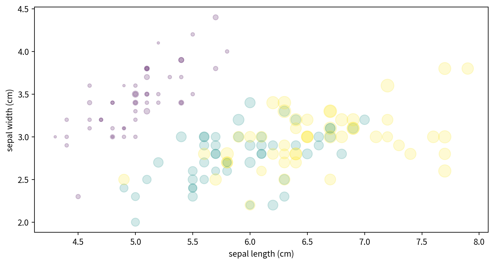
plot vs. scatter: Efficiency Note
- 對於小型資料集，
plt.plot和plt.scatter都很不錯 - 對於大型資料集（數千個點以上），
plt.plot的效率較高，因為所有點都使用相同的樣式繪製 plt.scatter在處理大型資料集時效率較低，因為它允許對每個點進行個別自訂，必須逐一繪製每個點。
Hands-on - Scatter Plot
試著看看空氣污染資料中，NO2濃度與SO2濃度有沒有相關？
因NO2和SO2資料筆數對不起來（有些日期有多筆資料），需要先處理
- groupby將資料以日期、測站名稱以及污染物名稱分組，計算平均
- 使用
資料框.unstack()展開成寬表
Hands-on - Scatter Plot
air_mean = df_air.groupby(['DateTime', 'sitename', 'itemengname']).concentration.mean().to_frame()
air_wide = air_mean.unstack()
print(air_wide) concentration \
itemengname AMB_TEMP CH4 CO NMHC NO NO2 NOx O3
DateTime sitename
2023-10-01 三義 26.3 NaN 0.27 NaN 0.9 3.6 4.5 31.1
三重 29.2 2.23 0.73 0.13 17.6 19.7 37.4 25.7
中壢 28.3 2.09 0.51 0.09 6.6 15.0 21.7 31.7
中山 28.7 2.10 0.34 0.03 1.5 9.6 11.2 39.0
二林 29.6 2.23 0.37 0.01 1.1 5.9 7.1 34.2
... ... ... ... ... ... ... ... ...
2024-01-15 馬公 20.5 2.00 0.26 0.02 0.8 3.6 4.5 55.8
馬祖 13.2 2.14 0.47 0.06 0.7 9.4 10.2 47.7
鳳山 21.7 2.20 0.65 0.24 3.2 24.4 27.7 32.4
麥寮 18.4 2.66 0.39 0.06 2.1 10.2 12.4 35.3
龍潭 15.8 NaN 0.38 NaN 4.2 15.2 19.5 33.5
itemengname PM10 PM2.5 RAIN_INT RH SO2 THC WIND_SPEED WS_HR
DateTime sitename
2023-10-01 三義 21.0 10.1 0.0 84.0 0.4 NaN 3.7 3.4
三重 23.0 11.4 NaN 74.0 0.8 2.36 NaN NaN
中壢 19.0 12.0 NaN 76.0 0.7 2.18 1.1 0.3
中山 23.0 11.7 NaN 81.0 0.6 2.13 2.0 1.6
二林 54.0 18.6 NaN 83.0 2.1 2.24 2.8 2.6
... ... ... ... ... ... ... ... ...
2024-01-15 馬公 28.0 20.5 NaN 73.0 0.5 2.02 5.3 4.7
馬祖 81.0 53.0 NaN 72.0 1.1 2.20 2.6 1.9
鳳山 59.0 28.2 NaN 58.0 1.8 2.44 0.6 0.5
麥寮 74.0 41.3 NaN 85.0 1.4 2.72 3.7 3.2
龍潭 32.0 19.6 NaN 88.0 1.4 NaN 4.6 4.2
[7562 rows x 16 columns]Hands-on - Scatter Plot
試著看看空氣污染資料中，NO2濃度與SO2濃度有沒有相關？ Ref:
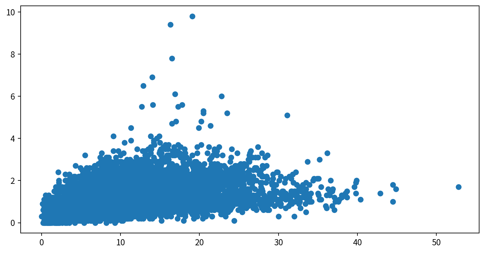
Hands-on - Scatter Plot
使用泡泡圖呈現NO2與SO2的關係，並用風速（WIND_SPEED）當作泡泡大小，觀察這些資料是否有相關
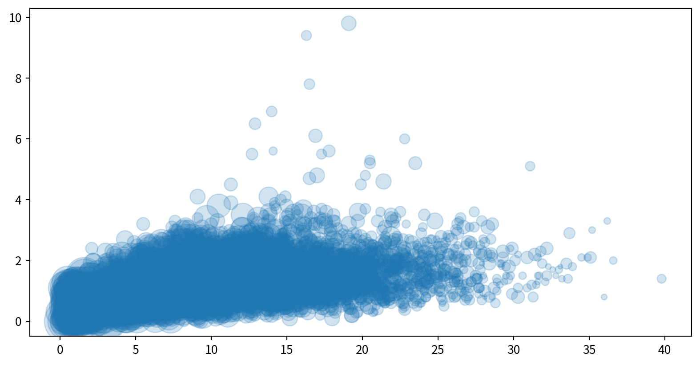
Visualizing Errors
Why Show Error Bars?
- Error bars 表示資料中的不確定性或變異性
- 有助於傳達測量結果的可靠性與精確度。
- 例如，將一個測量值報告為 \[74 \pm 5\] 比單純寫成 74 帶有更多資訊
Basic Error Bars with plt.errorbar
plt.errorbar(x, y, yerr=error size, fmt = style)在圖中加入Error bars
yerr設定垂直Error bars的大小（長度）fmt設定樣式 (same as inplt.plot)
Data:
Basic Error Bars with plt.errorbar
Plot: plt.errorbar(x, y, yerr=error size, fmt = style)
Customizing Error Bars
可在plt.errorbar()中微調error bar樣式
ecolor: error bars顏色elinewidth: error bar 線段寬度capsize: error bar caps寬度
Customizing Error Bars
Horizontal and One-Sided Error Bars
使用 plt.errorbar()中的xerr 增加水平error bar
Summary: Common Error Bar Options
| Parameter | Description |
|---|---|
yerr |
Vertical error bar sizes |
xerr |
Horizontal error bar sizes |
fmt |
Format string for marker/line style |
ecolor |
Color of error bars |
elinewidth |
Line width of error bars |
capsize |
Size of caps at the ends of error bars |
Key Takeaways
- 使用error bars顯示資料中的不確定性
- plt.errorbar 具有高度彈性與可自訂性，無論是簡單還是進階需求都適用
- 更多選項請參考Matplotlib documentation 官方文件。
Histograms, Binnings, and Density
What is a Histogram?
- 數值資料分佈distribution的圖形化呈現方式
- 將資料分成多個區間（bins），並顯示每個區間內資料點的出現次數（頻率）
- 是了解資料集的第一步
Creating a Simple Histogram
plt.hist(data), data通常是List 或Series
Customizing Histograms
可調整的參數
bins: Number of binsalpha: Transparencycolor,edgecolor: Color settings

Customizing Histograms
Comparing Multiple Distributions
疊加多個直方圖histograms並設定透明度方便比較
Data:
Comparing Multiple Distributions
使用dict(parameters)搭配**kwargs，將參數儲存後，方便多次使用
Hands-on - Histogram
看看新竹與前鎮一氧化碳(CO)的資料分布是否有差異（疊在一張圖中）
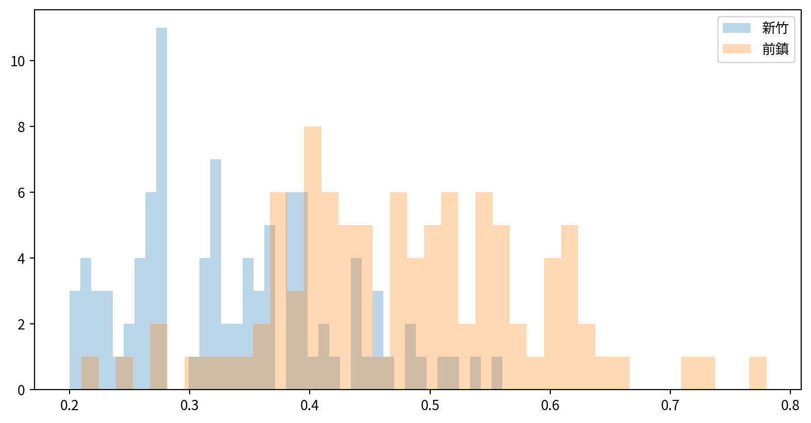
Customizing Plot Legends and Colorbars
Creating a Simple Legend
- 圖例賦予圖表元素意義，使視覺化結果更清晰且資訊更豐富
- 加入圖例最簡單的方法是使用
plt.legend() - 任何帶有
label的圖表元素都會出現在圖例中
Creating a Simple Legend
x = np.linspace(0, 10, 1000)
fig = plt.figure()
plt.plot(x, np.sin(x), '-b', label='Sine')
plt.plot(x, np.cos(x), '--r', label='Cosine')
plt.axis('equal')
plt.legend()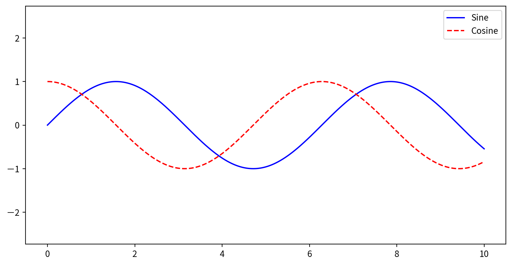
- By default, all labeled elements are included in the legend
Customizing Legend Placement and Appearance
- Location: 使用
loc參數控制位置 (e.g.,'upper left','lower center'). - Frame: 設定是否要加框
frameon=False或frameon=True. - Columns: 使用
ncol設定排版（幾個columns）
Legend Placement and Appearance
Legend Placement and Appearance
Choosing Elements for the Legend
如果有線段不需要圖標，可以直接不設定label
Key Points
- 在繪圖指令中使用
label，並呼叫plt.legend()建立圖例。 - 可以自訂圖例的位置、欄數、邊框等屬性。
- 只為想要的元素加上標籤或傳入特定物件，即可控制圖例的項目。
Why Use Colorbars?
- 提供解讀圖中顏色意義的對照表
- legends適用於離散標籤，而colorbars則是呈現連續標籤不可或缺的工具
Creating a Basic Colorbar
Data:
[[ 0. 0.01000984 0.02001868 ... -0.52711499 -0.53559488
-0.54402111]
[ 0. 0.01000934 0.02001768 ... -0.52708858 -0.53556805
-0.54399386]
[ 0. 0.01000784 0.02001467 ... -0.52700936 -0.53548755
-0.54391209]
...
[-0. -0.0085063 -0.01701176 ... 0.44793914 0.4551453
0.46230586]
[-0. -0.00845306 -0.01690528 ... 0.44513546 0.45229652
0.45941226]
[-0. -0.00839897 -0.01679711 ... 0.44228718 0.44940242
0.45647263]]Creating a Basic Colorbar
使用 plt.colorbar() 增加顏色對照表
Customizing Colormaps
使用預設的color map，並用cmap參數設定 (check plt.cm namespace (e.g., plt.cm.viridis, plt.cm.RdBu))
Types of Colormaps
- 連續型色彩映射（Sequential colormaps）：使用一組連續的顏色序列 (e.g.,
binary,viridis). - 發散型色彩映射（Divergent colormaps）：用兩種對比顏色來表示正負偏差 (e.g.,
RdBu,PuOr). - 定性型色彩映射（Qualitative colormaps）：沒有特定順序，適合類別型資料 (e.g.,
rainbow,jet).
Setting Color Limits and Extensions
- 使用
plt.clim()手動設定顏色範圍（以聚焦於特定的資料區間） - 在
plt.colorbar()中使用 extend 參數來標示超出範圍的數值
Setting Color Limits and Extensions

Discrete Colorbars
可以用 plt.cm.get_cmap() 取得不連續的色塊，參數為哪個幾個色塊with number of bins
Key Points
- 呈現連續型資料可使用色條，並謹慎選擇color map，確保圖表清晰且易於理解。
- 可以透過選擇color map、設定顏色範圍、延伸區域以及離散色塊自訂color bar。
- 可考慮配色在灰階或色盲觀眾眼中的呈現效果。
Multiple Subplots
Why Use Multiple Subplots?
- 將資料並排比較，方便分析和展示
- Matplotlib 可以在同一個圖形中排列多個較小的子圖（subplots）
1. Manual Placement with plt.axes
透過在圖形座標（0 到 1 之間）中指定 [left, bottom, width, height]，可以在圖中任意位置建立座標軸（axes）。
2. Simple Grids with plt.subplot
透過指定row、col和圖表索引plot index（從 1 開始，順序為從左到右、從上到下），可以建立子圖的網格 plt.subplot(row, col, plot index)
3. Flexible Layouts with
可使用plt.GridSpec(row,col)設定更複雜的子圖排版
Summary Table
| Method | Use Case | Access Pattern |
|---|---|---|
plt.axes |
Manual, precise placement | Variable names |
plt.subplot |
Simple grid, small number of subplots | Index (1-based) |
plt.GridSpec |
Complex, flexible layouts | Slicing, subplots |
管制圖 Control chart
管制圖 Control chart
- 管制圖可視為折線圖的延伸
- 如PM2.5濃度在自然狀態下就會高低起伏，如何判斷正常的變化以及不正常的變化就變得非常重要，使用管制圖可快速判斷不正常的數值起伏。
- 如需了解更多管制圖的背景知識，可參考wiki
管制圖 Control chart
使用平均值加減兩倍標準差以及加減三倍標準差當作管制界線，並使用matplotlib套件的axhline()函數將平均值與管制界線加入原有的折線圖中。
以下範例中axhline()函數共有以下輸入參數
管制圖 Control chart
若以三倍標準差當作管制界線，僅有幾個點超過兩個標準差，應在誤差範圍內
fig = plt.figure()
pm25Linkou = pm25Linkou.sort_values("DateTime")
plt.plot(pm25Linkou['DateTime'], pm25Linkou['concentration'])
plt.axhline(y=pm25Linkou['concentration'].mean(skipna=True),
color='g', linestyle='-')
plt.axhline(y=pm25Linkou['concentration'].mean(skipna=True)+
2*pm25Linkou['concentration'].std(),
color='y', linestyle=':')
plt.axhline(y=pm25Linkou['concentration'].mean(skipna=True)-
2*pm25Linkou['concentration'].std(),
color='y', linestyle=':')
plt.axhline(y=pm25Linkou['concentration'].mean(skipna=True)+
3*pm25Linkou['concentration'].std(),
color='r', linestyle=':')
plt.axhline(y=pm25Linkou['concentration'].mean(skipna=True)-
3*pm25Linkou['concentration'].std(),
color='r', linestyle=':')
plt.show()
管制圖 Control chart
若以三倍標準差當作管制界線，僅有幾個點超過兩個標準差，應在誤差範圍內
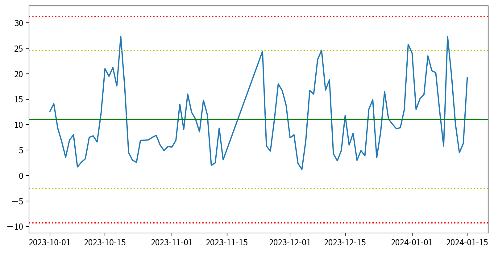
盒鬚圖 Box plot
除了用直方圖得知PM2.5的濃度分佈外，如果想知道每個測站 PM2.5濃度 的分佈是否有差異，可使用盒鬚圖。
- x軸：測站
- y軸：PM2.5濃度
- 盒（方塊）中線：中位數
- 盒（方塊）上緣：第三 四分位差
- 盒（方塊）下緣：第一 四分位差
- 鬚（線條）上緣：最大值（不超過 Q3 + 1.5 × 四分位距）
- 鬚（線條）下緣：最小值（不低於 Q1 - 1.5 × 四分位距）
- 點：離群值
盒鬚圖 Box plot
使用seaborn套件的boxplot()函數，可製作盒鬚圖，輸入參數為：
- data：資料框
- x軸：測站
- y軸：各月份要比較的數據分佈（此為PM2.5）

盒鬚圖 Box plot
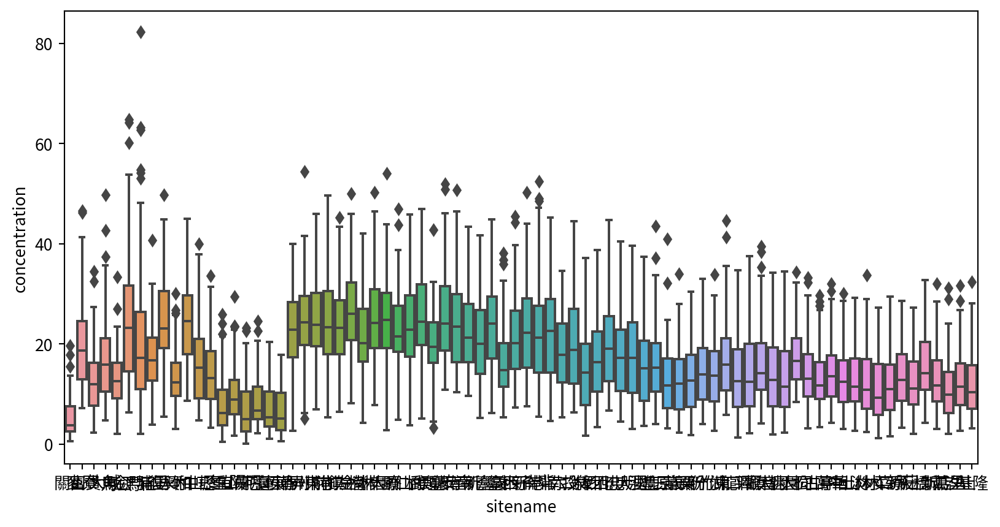
盒鬚圖 Box plot
Hands-on 盒鬚圖
使用盒鬚圖比較各月PM2.5濃度有無差異
須先將月份取出，使用pandas功能，Series.dt.month，Series可以是指定資料框欄位
siteid sitename itemid itemname itemengname itemunit monitordate \
6 80 關山 33 細懸浮微粒 PM2.5 μg/m3 2024-01-01
21 83 麥寮 33 細懸浮微粒 PM2.5 μg/m3 2024-01-01
36 84 富貴角 33 細懸浮微粒 PM2.5 μg/m3 2024-01-01
51 85 大城 33 細懸浮微粒 PM2.5 μg/m3 2024-01-01
59 78 馬公 33 細懸浮微粒 PM2.5 μg/m3 2024-01-01
concentration DateTime Month
6 17.8 2024-01-01 1
21 32.5 2024-01-01 1
36 24.6 2024-01-01 1
51 27.5 2024-01-01 1
59 33.4 2024-01-01 1 Hands-on 盒鬚圖
Ref:
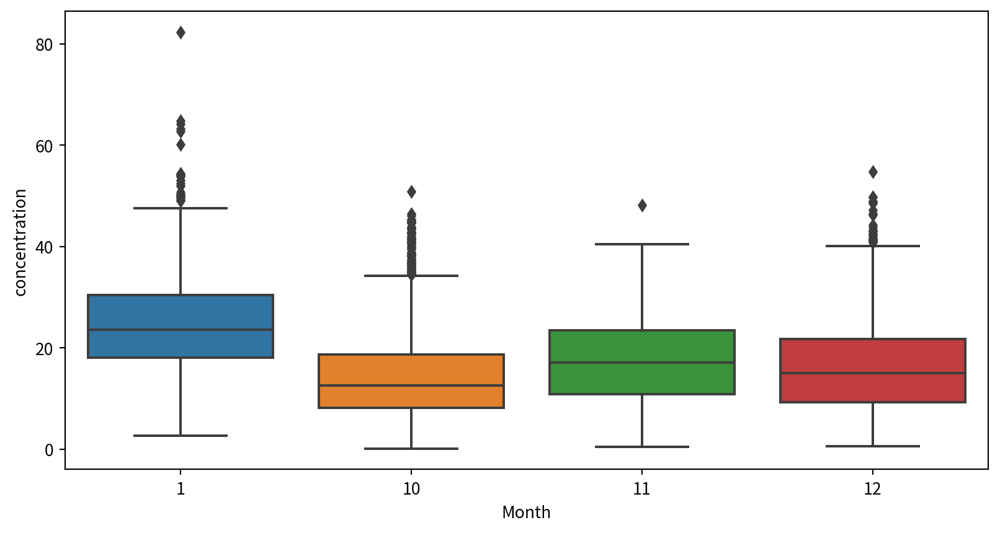
進階資料作圖
熱度圖 Heatmap
- 熱度圖使用顏色的深淺來表示數值的大小，通常會搭配XY兩軸的變量，所以使用一張圖就能表示三個維度的資訊。
- 使用
seaborn套件的heatmap()函數 - 在製作熱度圖之前，必須先將輸入資料處理成對應格式
- 若想使用熱度圖呈現每天（X軸為日期），PM2.5、PM10、SO2、NO2（Y軸為此四種污染物）的濃度（著色），我們必須將Pandas資料框的index設定為日期，PM2.5、PM10、SO2以及NO2為欄位名稱，各欄位的值是當日該物質的濃度。
熱度圖 Heatmap
df_long = df_air[df_air['itemengname'].isin(["PM2.5","PM10","CO","NO2","O3"])]
df_long_linkou=df_long[df_long['sitename']=="林口"][["DateTime","itemengname","concentration"]]
df_wide_linkou = pd.pivot(df_long_linkou, index='itemengname', columns='DateTime',values='concentration')
print(df_wide_linkou)DateTime 2023-10-01 2023-10-02 2023-10-03 2023-10-04 2023-10-05 \
itemengname
CO 0.26 0.23 0.19 0.15 0.18
NO2 4.30 12.20 9.30 3.60 4.90
O3 44.10 39.60 36.90 39.90 41.90
PM10 16.00 33.00 26.00 13.00 11.00
PM2.5 12.60 14.10 9.30 6.70 3.60
DateTime 2023-10-06 2023-10-07 2023-10-08 2023-10-09 2023-10-10 ... \
itemengname ...
CO 0.23 0.27 0.16 0.17 0.21 ...
NO2 9.20 9.00 2.90 3.60 5.80 ...
O3 29.70 30.60 44.10 43.90 38.60 ...
PM10 13.00 15.00 7.00 7.00 9.00 ...
PM2.5 7.00 8.00 1.70 2.60 3.30 ...
DateTime 2024-01-06 2024-01-07 2024-01-08 2024-01-09 2024-01-10 \
itemengname
CO 0.33 0.34 0.3 0.2 0.41
NO2 12.30 7.80 13.4 7.5 12.20
O3 43.70 51.20 36.9 34.8 41.10
PM10 35.00 37.00 25.0 10.0 44.00
PM2.5 20.60 20.20 12.6 5.8 27.30
DateTime 2024-01-11 2024-01-12 2024-01-13 2024-01-14 2024-01-15
itemengname
CO 0.35 0.28 0.21 0.22 0.36
NO2 16.10 15.40 8.40 8.20 14.70
O3 34.00 34.20 38.00 41.10 34.00
PM10 37.00 21.00 11.00 10.00 32.00
PM2.5 19.70 10.10 4.50 6.30 19.20
[5 rows x 97 columns]熱度圖 Heatmap
- 最後將資料放入seaborn套件的heatmap()函數，即可製作熱度圖。
- 有時使用內建色盤效果不一定好，可以透過設定cmap來調整色盤。
- cmap的選擇可參考官方文件
熱度圖 Heatmap
月曆熱度圖
月曆熱度圖是熱度圖的延伸，一般來說，月曆熱度圖的各維度為：
- X軸代表每年的”週”
- Y軸代表星期一至星期天
- 顏色的深淺則代表欲觀察數值
通常是為了觀察或呈現某一數值是否有季節或是隨著星期變化的趨勢。
calmap套件提供非常快速製作月曆熱度圖的方法。
月曆熱度圖
在製作月曆熱度圖時，需將日期與感興趣的資料取出，並將日期設定為index
pm25Linkou2023 = pm25Linkou[pm25Linkou["DateTime"]<'2024-01-01']
pm25Linkou2023=pm25Linkou2023.set_index(['DateTime'])
print(pm25Linkou2023) siteid sitename itemid itemname itemengname itemunit monitordate \
DateTime
2023-10-01 9 林口 33 細懸浮微粒 PM2.5 μg/m3 2023-10-01
2023-10-02 9 林口 33 細懸浮微粒 PM2.5 μg/m3 2023-10-02
2023-10-03 9 林口 33 細懸浮微粒 PM2.5 μg/m3 2023-10-03
2023-10-04 9 林口 33 細懸浮微粒 PM2.5 μg/m3 2023-10-04
2023-10-05 9 林口 33 細懸浮微粒 PM2.5 μg/m3 2023-10-05
... ... ... ... ... ... ... ...
2023-12-27 9 林口 33 細懸浮微粒 PM2.5 μg/m3 2023-12-27
2023-12-28 9 林口 33 細懸浮微粒 PM2.5 μg/m3 2023-12-28
2023-12-29 9 林口 33 細懸浮微粒 PM2.5 μg/m3 2023-12-29
2023-12-30 9 林口 33 細懸浮微粒 PM2.5 μg/m3 2023-12-30
2023-12-31 9 林口 33 細懸浮微粒 PM2.5 μg/m3 2023-12-31
concentration
DateTime
2023-10-01 12.6
2023-10-02 14.1
2023-10-03 9.3
2023-10-04 6.7
2023-10-05 3.6
... ...
2023-12-27 10.1
2023-12-28 9.2
2023-12-29 9.4
2023-12-30 12.9
2023-12-31 25.8
[82 rows x 8 columns]月曆熱度圖
calmap.yearplot(資料框)即可畫月曆熱度圖
Hands-on 月曆熱度圖
使用月曆熱度圖視覺化2023年NVDA股價變化，波動是否跟星期幾有關？
首先先載入股價資料，並將日期設定為index，且做好日期轉換
stock_data = pd.read_csv("https://raw.githubusercontent.com/CGUIM-BigDataAnalysis/BigDataCGUIM/master/EMBA_BigData/Data/NVDA.csv",index_col="Date")
stock_data.index = pd.to_datetime(stock_data.index)
stock_data.head()| Open | High | Low | Close | Adj Close | Volume | |
|---|---|---|---|---|---|---|
| Date | ||||||
| 2019-03-29 | 44.985001 | 45.134998 | 44.477501 | 44.889999 | 44.585125 | 45689600 |
| 2019-04-01 | 45.814999 | 45.875000 | 45.092499 | 45.570000 | 45.260521 | 48382400 |
| 2019-04-02 | 45.812500 | 46.197498 | 45.380001 | 45.750000 | 45.439281 | 44092000 |
| 2019-04-03 | 46.250000 | 47.750000 | 46.200001 | 47.154999 | 46.834740 | 78350400 |
| 2019-04-04 | 47.000000 | 47.492500 | 46.432499 | 47.064999 | 46.745358 | 45737600 |
Hands-on 月曆熱度圖
下一步則是安裝套件
參考：
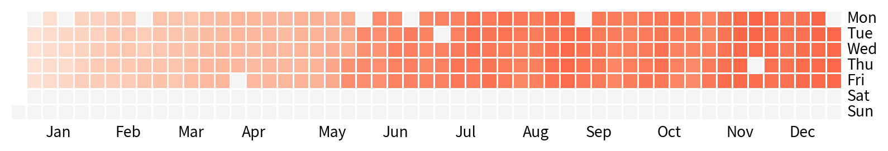
矩形圖 Tree map
矩形圖 Tree map
Treemap(矩形式樹狀結構繪圖法)是以二維平面的方式展示包含階層結構（hierarchical）形式的統計資訊，可設定的值包括面積、顏色以及階層。
矩形圖 Tree map
使用squarify套件的功能，設定sizes, labels即可
!pip3 install squarify
import squarify
squarify.plot(sizes=df_sq['nb_people'],
label=df_sq['group'], alpha=.8 )
plt.axis('off')
plt.show()Collecting squarify
Using cached squarify-0.4.4-py3-none-any.whl.metadata (600 bytes)
Using cached squarify-0.4.4-py3-none-any.whl (4.1 kB)
Installing collected packages: squarify
Successfully installed squarify-0.4.4
[notice] A new release of pip is available: 24.0 -> 25.1.1
[notice] To update, run: pip install --upgrade pip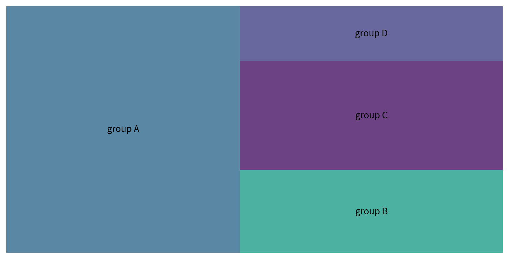
Python資料視覺化參考資料
https://github.com/yijutseng/DataVisPython/blob/master/DataVisCode.ipynb